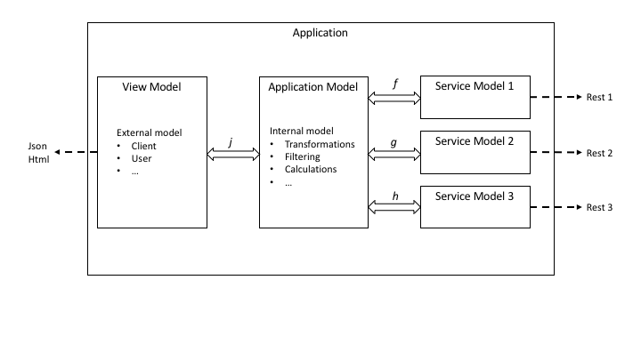

Opinionated Scala
Writing opinionated, idiomatic  Scala
Scala
Using Scalas good parts
Avoiding the bad ones
Recognizing common mistakes
Luka Jacobowitz
Jan Schulte
Valentin Willscher
Table of contents
- General philosophy
- Scalas features
- Case classes
- Traits
- Implicits
- Pattern matching
- About Exceptions
- Warts & style
- General advice
General philosophy
Two main things we want to achieve.- Referential Transparency
- Type Safety
Referential Transparency
Def: "Referential transparency means exchanging any term for another term that refers to the same entity does not change the program."Lets us and the compiler reason with our code at a much greater level
def add(a: Int, b: Int): Int {
launchTheNukes()
a + b
}
add(1, 3) * add(1, 3) //let’s inline this!
val x = add(1,3)
x * x //whoops! We changed the program!
Type Safety
Complete Type Safety: A program that compiles must always be a valid program (i.e. no runtime exceptions).Scala's Type System is extremely expressive! Let the compiler work for you!
scala> val i2: Int Refined Positive = -5
:22: error: Predicate failed: (-5 > 0).
val i2: Int Refined Positive = -5
^
scala> val u1: String Refined Url = "htp://example.com"
:38: error: Url predicate failed: unknown protocol: htp
val u1: String Refined Url = "htp://example.com"
^
Case classes
- "Java-DTOs" - simple data bags
- Must never contain state
- Should never depend on other types unless domain rules tell so
- Anemic Domain Model, not Rich Domain Model (= classical OOP)
- Should never throw Exceptions, not even on instantiation
Containing state
case class User(
name: UserName,
val lastLogins: mutable.Seq[DateTime],
var failedLogins: Int
)
Depending on other entities
Not so good:
case class Pet(name: String) //defined somewhere else
case class User(name: String) {
def hasSameNameAs(pet: Pet) = this.name == pet.name
}
case class Pet(name: String, typ: PetType) //somewhere else
case class User(name: String, var failedLogins: Int)
object User {
implicit class UserOps(user: User) {
def hasSameNameAs(pet: Pet) = user.name == pet.name
}
}
Traits
Traits in different flavours- Sealed traits for sumtypes
- "interface" inheritance
- Encoding typeclasses
- Traits without implementation
- Dependency injection, cake pattern
Sealed traits for sumtypes
sealed trait Shape
final case class Circle (radius: Double) extends Shape
final case class Rectangle(width: Int, height: Int) extends Shape
final case object Rheinturm extends Shape
final case object KoelnerDom extends Shape
Gives us...
- Pattern matching safety (exhaustive warnings)
- Easy to comprehend description of business domain
Important:
- The sealed keyword is essential
- Avoid functionality
"interface" inheritance
sealed trait LogMessage {
def msg: String
}
case class InfoMessage(msg: String) extends LogMessage
case class WarnMessage(msg: String) extends LogMessage
case class ErrorMessage(msg: String) extends LogMessage
trait Drawable {
def asImage: JPG
}
case class Circle(...) extends Drawable {
override def asImage: JPG = ???
}
'Okayish' when writing application code but not library code...
encode typeclasses
- Typeclasses are a powerfull concept.
- They are a bit more boilerplate than inheritance.
- Always use typeclasses when writing libraries or when inheritance gets more complex.
typeclasses for libraries
Bad logging library:
trait StringSerializeable {
def serialized: String
}
def log[A <: StringSerializeable](obj: A) =
writeToLogFile( obj.serialized )
Good logging library:
trait StringSerializer {
def serialize[A](obj: A): String
}
def log[A: StringSerializer](obj: A) =+
writeToLogFile( implicitly[StringSerializer].serialize(obj) )
zero implementation traits
- They have nothing extending them
- They are never intantiated
- Used for typelevel programming
- Used for phantom types
DI / cake pattern
Just no. Don't do that. Period.Use Constructor injection instead, or Macwire if you are really lazy.
{insert bakery-of-doom image here}
abstract classes
- One can extend many traits but only 1 abstract class
- They can have constructor parameters
- Generally use traits unless you need abstract classes
This is an okayish usage to avoid boilerplate:
sealed abstract class ServiceError(msg: String)
case object Timeout extends ServiceError("Request took too long")
case object InvalidResponse extends ServiceError("Parse-error")
Implicits
What happens when we try to compile and execute this code:- Avoid implicits, except for wellknown patterns
- The more specific the implicit type the better
Implicit methods
Avoid implicit methods except for- Extending functionality on existing types (implicit class pattern)
- Methods with only implicit parameters (typelevel programming)
Implicit methods examples
Bad:
implicit def charList(s: String): List[Char] = ???
Good:
class StringOps(s: String) {
def toCharList: List[Char] = ???
}
implicit def (s: String): StringOps = new StringOps(s)
...or even better:
implicit class StringOps(s: String) {
def toCharList: List[Char] = ???
}
Implicit parameters
- There is only one sane usage: typeclasses
- That's it. Nothing more. Period. (Or is there more?)
- Don't use it to pass "configurations" or "contexts" down the call chain!
It's common practice to pass an implicit ExecutionContext.
This is a code smell and can mostly be solved better.
Implicit parameters
Bad:
def greetUser(name: UserName)(implicit lang: Language) = ???
Worse:
def allUsers(repository: UserRepository)
(implicit ec: ExecutionContext) = ???
Doomed!
def getAllUsers(repository: UserRepository)
(implicit ec: ExecutionContext, timeoutLimit: Long) = ???
Implicit parameters
the good parts
Good:
def serialize[A](obj: A)
(implicit si: SerializeInstructions[A]) = ???
Better:
def serialize[A: SerializeInstructions](obj: A) = ???
Pattern matching
- Powerful but unsafe in many cases
- Sometimes overused - if/else is not generally bad!
- Don't write unsafe pattern matches, ever.
You don't have to
Pattern matching - overused
birthyear match {
case 1989 => println("This is the best year")
case 2020 => println("Are you from the Future[_]?!")
}
Do we really need pattern matching here? Let's see...
if(birthyear == 1989)
println("This is the best year")
else if(birthyear == 2020)
println("Are you from the Future[_]?!")
Safe pattern matching
Using the -Xfatal-warnings compiler-flag,it is always safe to pattern match on...
- Primitives (Int, Boolean, String, ...) within case classes
- Sealed traits of (final) case classes
Everything else can make pattern matching unsafe
Including guard-conditions
But: pattern matching while using a default case is always safe, obviously
pattern matching examples
safe cases
true match { case true => ??? }
//Error: It would fail on the following input: false
sealed trait Fruit
case class Grape (seedWeight: Option[Double]) extends Fruit
case class Banana(length: Float) extends Fruit
case class Apple (seeds: List[Seed]) extends Fruit
someFruit match {
case Grape (_) => ???
case Banana(_) => ???
}
//Error: It would fail on the following input: Apple(_)
someFruit match {
case Grape (_) => ???
case Banana(20.05) => ???
case Apple (_) => ???
}
//Error: It would fail on the following input:
//Banana((x: Float forSome x not in 20.05))
pattern matching examples
guards
Unsafe when using guards:
someFruit match {
case Grape (_) => ???
case Banana(length) if length > 20 => ???
case Apple (_) => ???
}
Make it safe with default case:
someFruit match {
case Grape (_) => ???
case Banana(length) if length > 20 => ???
case Apple (_) => ???
case _ => ???
}
pattern matching examples
nested
Safe nested pattern matching:
//case class Grape(seedWeight: Option[Double]) extends Fruit
someFruit match {
case Grape (Some(weight)) => ???
case Banana(_) => ???
case Apple (_) => ???
}
You can pattern match as deep as you want,
as long as every nesting-level applies to these rules!
as long as every nesting-level applies to these rules!
pattern matching examples
nested
Is this safe?
//Remember: case class Apple(seeds: List[Seed]) extends Fruit
someFruit match {
case Grape (_) => ???
case Banana(_) => ???
case Apple (List(Seed(), Seed(), Seed())) => ???
}
It will fail with a MatchError at runtime! Better:
someFruit match {
case Grape (_) => ???
case Banana(_) => ???
case Apple (Seed() :: Seed() :: Seed() :: Nil) => ???
}
//Compiler:
//match may not be exhaustive.
//It would fail on the following inputs:
//Apple(List(_)), Apple(List(_, _)), Apple(List(_, _, _, _)), Apple(Nil)
Warts & style
Pitfall partial functions
- Never use `Option.get`...
- ...use `getOrElse`, `map` or literally anything else.
- Do NOT use `List.apply`, e.g. `val x = List(5)`
- ... use `lift` instead.
- Same goes for `head`, there use `headOption`
Pitfall partial functions
list map { case Person(name) => save(name) }list collect { case Person(name) => save(name) }
Functions on functors
def transformOption(input:Option[Int]):Option[Int]def transform(input:Int):IntmyOption.map(transform)
Functions on functors
def transformEachSingleElement(input:List[Int]):List[Int]def transform(input:Int):IntmyList.map(transform)
Further suggestions
- Avoid using `Seq`, as it default to the mutable version
- Don't await Futures unless you want to block the thread on purpose!
- Single file only for ADTs (= case class model)
Further suggestions
- Public methods and vals should have a type annotation
- You might want to try Scapegoat or WartRemover to help
General advice
Libraries & frameworks
- Prefer Scala libraries over Java libraries
- Use strongly typed, functional libraries
- Typelevel is a good starting point
- Avoid writing your own framework!
Keep it simple, stupid!
- Scala is a powerful weapon!
- Do you really need Akka? Spark?
- Avoid macros!
- Might shapeless be the option?
Separation of concerns
- DRY is overrated
- Do one thing and do it well!
- From functions to architecture
-
